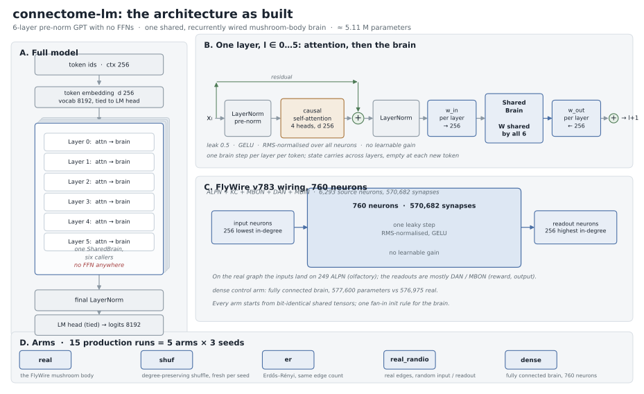
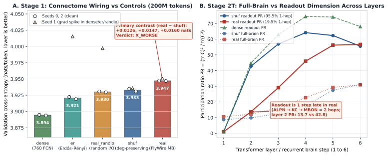
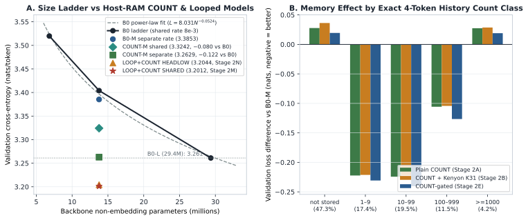
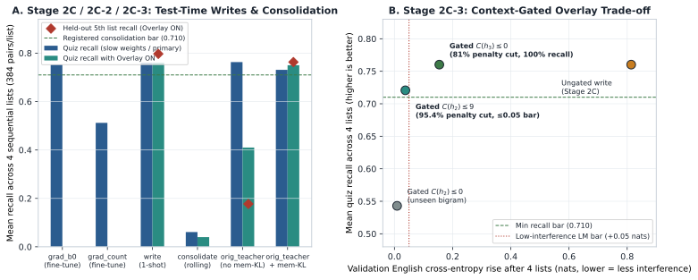
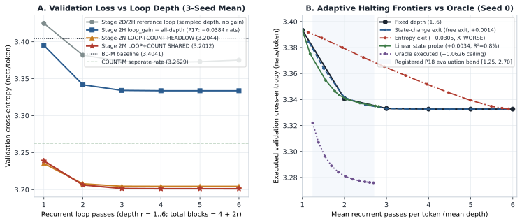
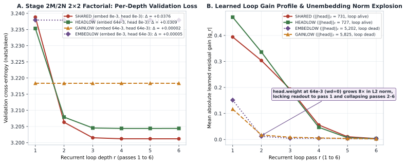

From Connectome Wiring to Counted Memory and Recurrent Depth: Pre-Registered Tests of Drosophila Mushroom-Body Principles in Small Language Models
X_WORSE; 1-step readout delay).B0-L at 0 extra VRAM.head.weight to 8e-3 prevents 8× norm explosion and reaches −0.2029 nats vs B0-M.Abstract
Biological neural circuits inspire machine learning both as literal connectivity graphs and as algorithmic motifs—sparse random expansion, homeostatic competition, fast associative memory, and adaptive recurrent computation. Across 16 pre-registered stages (101 production training and evaluation runs, 25 registered predictions P1–P25, and a 218-mutant automated test audit), we systematically test where Drosophila mushroom-body principles help—and where they fail—in small language models (5M–29M parameters trained on 200M tokens of FineWeb-Edu).
First, in Stage 1 and Stage 2T, replacing a 6-layer transformer's feed-forward networks with a shared recurrent reservoir wired like the adult Drosophila mushroom body (FlyWire v783: 6,293 neurons, 570,682 synapses) performs reliably worse than degree-preserving random shuffles (real − shuf = +0.0126, +0.0147, +0.0160 nats/token, verdict X_WORSE) and dense or Erdős–Rényi controls (dense < er < real_randio ≈ shuf < real). While the real connectome has half the effective rank of its shuffles (0.48×), its full-brain activity participation ratio matches the shuffles (real ÷ shuf = 1.00, refuting P1); instead, its three-layer anatomical routing (ALPN → KC → MBON) leaves only 19.5% of readout neurons one hop from an input (versus 95.5% in degree-preserving shuffles), delaying readout dimensionality by one recurrent step.
Second, in Stages 2.0–2B and 2E–2K2, we replaced literal connectome wiring with a counted host-RAM n-gram memory (COUNT, orders 2–5 over 881M tokens, 5.15 GiB host RAM, zero GPU parameters) and test a mushroom-body similarity backoff (Kenyon hash: fixed PPMI token codes, sparse random expansion K = 31, homeostatic k-winners-take-all into 4.19M buckets). Online leave-one-out count subtraction during training is essential (preventing a +0.84 nat validation collapse from target leakage). On equally tuned separate learning rates (Muon 8e-3 on block matrices, AdamW 64e-3 on embeddings and head), plain COUNT lowers 13.8M-parameter (Size M) validation loss by −0.1224 nats (3.3853 → 3.2629, X_BETTER, P12–P13), matching a 29.4M-parameter (Size L) baseline at +3.4% step time and zero additional VRAM. However, while the Kenyon similarity backoff improves an offline n-gram model on unseen and rare histories (+0.0151 and +0.0130 nats, P5 supported), that gain vanishes inside the neural network (+0.0046 nats vs plain COUNT, NO_MEANINGFUL_DIFFERENCE, P4 refuted). Likewise, learned per-order/per-bin gates and scalar controls (Stages 2E, 2K, 2K2) fail to beat plain COUNT once embeddings and the unembedding head train at 64e-3 (P19–P20 refuted).
Third, in Stages 2C, 2C-2, and 2C-3, we test complementary learning systems (CLS) using gradient-free one-shot count writes (Overlay) followed by KL-anchored replay consolidation into slow weights. One-shot writes learn 4 sequential lists of 384 cue–answer pairs (1,536 pairs) with 0.760 recall and zero catastrophic forgetting (backward transfer = 0.000 vs −0.330 and −0.651 for gradient fine-tuning, P7 supported). We show that standard sequential replay consolidation collapses (0.061 recall) due to teacher drift (Stage 2C-2, +0.704 recovery with an untouched teacher) and overlay-channel drift (Stage 2C-3, H1a supported: consolidating with the overlay off de-calibrates the backbone's memory-reading pathway, dropping recall on an unseen 5th list from 0.797 to 0.177). Adding a memory-on KL consistency loss restores both memory-off (0.731) and memory-on (0.750) consolidated recall while preserving unseen-list reading (0.763). Furthermore, gating test-time overlay writes by stored n-gram history counts (GatedOverlay) preserves 100% of quiz recall (0.7602) while cutting English validation loss interference by 81.0% at C(h3) ≤ 0, and cuts interference by 95.4% (+0.038 nats) at C(h2) ≤ 9.
Fourth, in Stages 2D, 2H, 2I, and 2L–2N, we study recurrent depth (LoopGPT: 2 prelude blocks, a shared 2-block core looped r ∈ {1..6} times, 2 coda blocks). While exact token-level optimal halting scales affinely with log-effort (P9 supported, R2 = 0.957–0.993) and beats fixed depth by 0.0626 nats, no deployable causal halting rule (state-change, entropy, margin, or ridge-regression state probes) beats fixed depth by 0.01 nats (P18 refuted; linear probes explain <1% of next-pass benefit variance, and entropy exiting is X_WORSE by −0.0305 nats). Training with a learned per-pass residual gain (loop_gain) and all-depth loss (Stage 2H, P17 supported) lowers validation loss by −0.0384 nats (3.3720 → 3.3336) and learns to damp passes 5–6 to zero automatically, so fixed depth 3 captures 99.2% of the 6-pass gain. Finally, through a pre-registered 2×2 factorial (Stages 2M–2N, P22–P25), we prove that training the untied head.weight at 64e-3 with zero weight decay causes an 8× L2 norm explosion (>5,200 vs ~730) that locks the shared readout to pass 1 and kills recurrent depth. Restraining head.weight to 8e-3 (SHARED and HEADLOW) revives the loop (+0.0376 and +0.0309 nats loop benefit) and achieves 3.2012 nats (3.2015 at depth 3)—a −0.2029 nat total reduction below the B0-M baseline (3.4041) at identical GPU parameter count.
1. Introduction and Summary of Contributions
Small language models trained on consumer hardware face two hard walls: GPU memory (VRAM) and parameter capacity. Biological nervous systems—such as the Drosophila melanogaster mushroom body (MB)—operate under tight physical constraints using three recurring architectural motifs:
- Specific synaptic connectivity vs sparse random expansion: Olfactory projection neurons (ALPNs) project onto a larger population of Kenyon cells (KCs) governed by global anterior paired lateral (APL) inhibition and homeostatic firing-rate thresholds, which in turn project to mushroom body output neurons (MBONs) modulated by dopaminergic neurons (DANs) (Dasgupta et al., 2017; Litwin-Kumar et al., 2017).
- Complementary fast associative writes and slow consolidation: KCs write one-shot associations into KC→MBON synapses without catastrophic overwriting of prior memories, while offline replay consolidates associations into slower cortical/backbone representations (McClelland et al., 1995; Bennett et al., 2021).
- Recurrent iterative refinement: Shared circuit blocks refine representations over multiple recurrent passes when single-pass processing is insufficient.
In this study, we ask: Which of these principles genuinely improve a transformer language model at the 5M–29M parameter scale on a single 4–8 GB GPU, when subjected to strict pre-registration, paired multi-seed decision rules, and automated mutation auditing?
2. Methodology, Pre-Registration Discipline, and Mutation Auditing
Every experimental stage (Stage 1, Stage 2.0, and Stages 2A through 2N) was governed by a committed PREREG_*.md file whose SHA-256 digest and git commit hash were recorded inside every run's results.json output (with git_dirty: false enforced by the analysis scripts).
- Smallest Effect Size of Interest (SESOI): Fixed before Stage 1 and confirmed in Stage 2.0 (where
2 × SD(B0-M) = 0.0054nats, so the pre-set floor binds) at SESOI = 0.01 nats/token. - Paired multi-seed verdict rule (
src/clm/analyze.py): Given paired seeds s ∈ {0, 1, 2} (or 5 seeds s ∈ {0..4}) and per-seed difference ds = LX(s) − LY(s) (where lower cross-entropy is better):- X_BETTER: mean(d) ≤ −0.01 and ds < 0 for every seed s.
- X_WORSE: mean(d) ≥ +0.01 and ds > 0 for every seed s.
- NO_MEANINGFUL_DIFFERENCE: |mean(d)| < 0.01 and |ds| < 0.02 for every seed s.
- INCONCLUSIVE: any other finite outcome.
- Automated Mutation Audit (
218 / 218mutants killed): Alongside 350+ unit tests intests/,scripts/mutation_audit.pyprogrammatically plants 218 single-line bugs (M1–M222) acrosssrc/clm/(e.g., off-by-one leave-one-out subtraction, validation document leakage into count tables, stale prefetch buffers, or mis-routed optimizer parameter groups) and requires the targeted pytest suite to fail byAssertionErroron every single mutant.
3. Part I: Literal Connectome Wiring vs Controls (Stage 1 & Stage 2T)
3.1 Stage 1 SharedBrain Architecture and Experimental Design
Stage 1 tested whether replacing the feed-forward networks (FFNs) of a 6-layer pre-norm GPT (d_model = 256, 4 heads, ctx = 256, BPE vocabulary 8,192, tied embeddings, ~5.11M total parameters) with a single shared recurrent reservoir (SharedBrain) wired according to the adult Drosophila mushroom body improves validation cross-entropy over degree-preserving random rewirings at equal parameters, tokens, data order, and fan-in initialisation.

w_in writes into the 256 lowest in-degree brain neurons, the 6,293-neuron FlyWire v783 mushroom body takes one leaky step (leak 0.5, GELU, RMS-normalised across all neurons), and w_out reads the 256 highest in-degree neurons back into the residual stream.3.2 Stage 1 and Stage 2T Results: Why Literal Connectome Wiring Loses

real − shuf) is +0.0126, +0.0147, +0.0160 nats (verdict X_WORSE), and clean seeds (0, 2) follow the Litwin-Kumar et al. (2017) plasticity-density prediction: dense (3.894) < er (3.921) < real_randio (3.930) ≈ shuf (3.933) < real (3.947). (B) Layer-by-layer participation ratio PR = (tr C)2 / tr(C2) in Stage 2T: full-brain PR is identical between real and shuf by Layer 6 (refuting P1), but real readout PR lags by one recurrent step across Layers 2–4 because only 19.5% of readout neurons are 1 hop from an input (ALPN → KC → MBON). | Arm | Topology (Neurons / Synapses) | Seed 0 | Seed 1 | Seed 2 | Clean Mean (0, 2) | Full-Brain PR (L6) | Readout PR (L2, L3, L6) | 1-Hop Input→Readout |
|---|---|---|---|---|---|---|---|---|
dense |
760 / 577,600 (FCN control) | 3.8949 | 4.0377* | 3.8939 | 3.8944 | 57.2 | 44.8, 62.9, 68.0 | 100.0% |
er |
6,293 / 570,682 (Erdős–Rényi) | 3.9224 | 4.0155* | 3.9190 | 3.9207 | 43.9 | 42.3, 56.4, 55.9 | 99.2% |
real_randio |
6,293 / 570,682 (Real edges, rand I/O) | 3.9309 | 3.9973* | 3.9295 | 3.9302 | 36.9 | 41.0, 47.3, 48.3 | 91.4% |
shuf |
6,293 / 570,682 (Degree-preserving) | 3.9350 | 3.9359 | 3.9309 | 3.9329 | 31.1 | 42.8, 56.9, 55.5 | 95.5% |
real |
6,293 / 570,682 (FlyWire v783 MB) | 3.9476 | 3.9507 | 3.9468 | 3.9472 | 30.9 | 13.7, 29.1, 56.6 | 19.5% |
0.48×), full-brain activity dimension at Layer 6 is identical (real ÷ shuf = 1.00, refuting P1). Instead, because the biological circuit routes olfactory inputs (ALPN) through Kenyon cells (KC) before reaching output neurons (MBON/DAN), only 19.5% of readout neurons in real lie one synaptic hop from an input (236 direct edges vs 1,788 in shuf). Under 1-step-per-layer stepping, real loses roughly one of its six recurrent layers of readout signal.
4. Part II: Counted Host-RAM Memory, Leave-One-Out, and Fly-Hash Backoff (Stages 2.0–2B, 2E–2K2)
4.1 Stage 2.0: Modern Speedrun Baseline (B0) and Scaling Ladder
Stage 2 replaced the slow sparse reservoir (~2,400 tokens/s) with a fast modern transformer baseline (B0: pre-norm decoder, context 512, vocab 8,192, RMSNorm without gain, RoPE, QK-norm, ReLU2 MLP, zero-initialised output projections, untied head.weight, value embeddings at first and last layers with gated skips, logit softcap at 30). A 50M-token pilot showed Muon at lr = 8e-3 (3.6649) beat tuned AdamW (3.8113) by −0.1464 nats. Training B0-S (6.82M params: 3.5198 nats), B0-M (13.76M params: 3.4041 nats, seed SD 0.0027), and B0-L (29.36M params: 3.2610 nats) for 200M tokens established the scaling curve L(N) = 8.031 N−0.05235.
4.2 Stages 2A, 2F, and 2G: Host-RAM COUNT, Leave-One-Out, and Separate Rates
Following Magnusson et al. (2026), we counted n-gram continuations of orders 2–5 (histories of 1–4 tokens, minimum counts cmin = (1, 1, 2, 2), top-16 continuations) over all 881,048,239 training-split tokens of FineWeb-Edu shard 000 into 5.15 GiB of host RAM. A background CPU thread prefetches the stupid-backoff-weighted continuation distribution and projects it through the model's untied head.weight into the token embedding with √d LayerNorm amplification.
2.3967, validation loss 4.1612 — +0.8391 nats worse than with LOO at 3.3221). Decoupling AdamW (64e-3) from Muon (8e-3) in Stages 2F–2G lowered COUNT-M loss by −0.0614 nats (P12) and widened the paired COUNT-M vs B0-M lead to −0.1224 nats (3.2629 vs 3.3853, P13 X_BETTER), matching the 2.13× larger B0-L (3.2610) at +3.4% step time and zero GPU VRAM.

B0 parameter scaling ladder versus COUNT-M and LOOP+COUNT at Size M (13.76M non-embedding parameters). (B) Validation cross-entropy difference vs B0-M across exact 4-token history frequency classes: COUNT wins by −0.22 nats on stored 1–9 and 10–99 histories, while neither Kenyon similarity buckets (Stage 2B) nor learned gates (Stage 2E) eliminate the small penalty on unseen (not stored) histories.4.3 Stages 2B-0 and 2B: Why the Mushroom-Body Kenyon Similarity Backoff Vanishes in the Network
To test whether a mushroom-body similarity hash can supply backoff counts on the 47.3% of validation positions whose 4-token history is unseen, Stage 2B-0 and Stage 2B projected concatenated 64-dim PPMI token codes through a sparse random projection (K = 31 inputs per cell, K31) into two sub-codebooks of 2,048 homeostatically balanced Kenyon cells (4.19M product buckets per order).
- Offline n-gram pre-test (Stage 2B-0): Sweeping K ∈ {1, 3, 7, 15, 31, dense} confirmed Litwin-Kumar et al.'s (2017) saturation prediction (P5 SUPPORTED: bucket quality improved by 0.0052 nats from K=1 to K=31 and saturated from K=7 to dense). On the 871M-token offline evaluation, Kenyon buckets lowered cross-entropy on unseen and
1–9histories by −0.0151 and −0.0130 nats (vs0.0001for random hash buckets), narrowly missing the pre-registered0.0200-nat Gate 2 bar. - In-network test (Stage 2B): Training 200M-token networks with
COUNT + Kenyon K31andCOUNT + random bucketsyielded NO_MEANINGFUL_DIFFERENCE on all contrasts:Kenyon − COUNT = +0.0046nats,random − COUNT = +0.0040nats, andKenyon − random = +0.0007nats (P4 REFUTED). Filling empty exact slots with pooled bucket counts degraded unseen-history loss by+0.0085nats, indicating that replacing a clean zero ("exact history absent") vector with pooled counts removes a useful absence signal without adding distributional information beyond what the transformer's attention layers already compute.
4.4 Stages 2E, 2K, and 2K2: Learned Context Gates vs Scalar Controls
In Stage 2E (shared learning rate 0.032), adding a 1,568-parameter per-order, per-source, per-bin gate plus absent-history vectors beat plain COUNT by −0.0111 nats (P10 SUPPORTED), while Kenyon-gated lost to gated by +0.0035 nats (P11 REFUTED). However, the learned exact gates grew to 13–90× their initial value of 1.0, confounding structural bin-weighting with overall scale amplification. Re-testing the gated read against 1-scalar (COUNT-scaled) and 4-scalar (COUNT-oscaled) controls on the superior separate-rate recipe (Muon 8e-3 / AdamW 64e-3) in Stage 2K (gates at 64e-3, 3 seeds) and Stage 2K2 (gates at 8e-3, 5 seeds) showed that plain parameter-free COUNT beat every gated and scaled variant (P19 & P20 REFUTED; mean gaps +0.0461 and +0.0770 at 64e-3; +0.0147, +0.0261, and +0.0169 across 5 seeds at 8e-3).
5. Part III: Complementary Learning Systems — One-Shot Writes, Consolidation, and Context Gating (Stages 2C, 2C-2, 2C-3)
5.1 Stage 2C: Gradient-Free One-Shot Writes (P7) and Kenyon Twin Transfer (P8)
On the frozen COUNT-M checkpoint, incrementing a cue token's count for a target answer token adds that target's head.weight row (scaled by write weight w = 4.0) to the memory read without gradients (Overlay). Across 4 sequential lists of 384 cue–answer pairs (1,536 pairs total), one-shot write achieved 0.760 mean recall with 0.000 backward forgetting (P7 SUPPORTED), whereas gradient fine-tuning suffered severe forgetting (−0.330 on B0-M, −0.651 on COUNT-M) and wrecked English validation loss (3.362 → 10.45–12.62 nats). On 512 semantic twin cues, writing into the Kenyon 1-token hash overlay preserved stored-twin recall (0.778) and discrimination (0.793) while transferring answers to 3.0% of unwritten twins (P8 SUPPORTED).
5.2 Stages 2C-2 and 2C-3: Diagnosing Teacher Drift and Overlay-Channel Drift

orig_teacher: 0.763 memory-off, but 0.410 memory-on and 0.177 on the 5th list); adding memory-on KL consistency (Stage 2C-3) restores all three (0.731, 0.750, 0.763). (B) Context-gated overlay writes (GatedOverlay) eliminate 81.0% to 95.4% of the English validation loss rise while preserving quiz recall.| Stage & Arm | Mechanism / Gate Rule | Memory-Off / Primary Recall | Backward Transfer | Memory-On Recall | Unseen 5th-List Recall | English Val Loss (Start 3.362) | Verdict |
|---|---|---|---|---|---|---|---|
2C gradient_b0 |
Fine-tune B0-M weights (300 steps/list) | 0.753 | −0.330 | — | — | 10.451 (+7.02) | Forgets & Wrecks LM |
2C gradient_count |
Fine-tune COUNT-M weights (300 steps/list) | 0.512 | −0.651 | — | — | 12.624 (+9.26) | Forgets & Wrecks LM |
2C write |
1-shot count overlay (w = 4.0, ungated) | — | 0.000 | 0.760 | 0.797 | 4.175 (+0.814) | P7 Supported |
2C consolidate |
KL replay from rolling teacher (mem off) | 0.061 | −0.251 | 0.040 | — | 3.392 (+0.030) | Fails (Teacher Drift) |
2C-2 orig_teacher |
KL replay from untouched teacher (no mem-KL) | 0.763 | +0.028 | 0.410 | 0.177 | 3.395 (+0.033) | Channel Drift (H1a) |
2C-3 orig_teacher + mem_kl |
Untouched teacher + memory-on KL consistency | 0.731 | +0.019 | 0.750 | 0.763 | 3.393 (+0.031) | Passes All 4 Rules |
2C-3 write_gated_k3_c0 |
1-shot write gated by C(h3) ≤ 0 (order4) |
— | 0.000 | 0.760 | — | 3.516 (+0.154) | −81.0% LM Penalty |
2C-3 write_gated_k2_c9 |
1-shot write gated by C(h2) ≤ 9 (order3) |
— | 0.000 | 0.721 | — | 3.399 (+0.038) | −95.4% LM Penalty |
5.3 Stage 2C-3 Part 4b: Context-Gated Overlay Writes (GatedOverlay)
Suppressing the 1-token overlay write whenever the surrounding 3-token context is present in the corpus order4 table (C(h3) ≥ 2, write_gated_k3_c0) preserves 100.0% of quiz recall (0.7602 vs 0.7602 on every seed) while cutting the English validation loss rise by 81.0% (+0.814 → +0.154 nats). Suppressing whenever the 2-token context has count ≥ 10 (write_gated_k2_c9) keeps recall at 0.721 while cutting the English penalty by 95.4% (+0.038 nats, clearing the ≤ 0.05 low-interference bar).
6. Part IV: Recurrent Depth, Halting Frontiers, and the head.weight Collapse (Stages 2D, 2H–2I, 2L–2N)
6.1 Stages 2D and 2H: Stabilizing Looped Transformers with loop_gain and All-Depth Loss
In LoopGPT (2 prelude blocks, a shared 2-block recurrent core run r ∈ {1..6} times, 2 coda blocks), training at one random depth per batch (Stage 2D reference) reached 3.3720 best-depth loss at depth 4, but degraded at depths 5 and 6. Adding a learned per-pass per-channel residual gain (loop_gain, 6 × 384) and training on the mean loss across all six depths (Stage 2H both) lowered validation loss by −0.0384 nats (3.3336 vs 3.3720, P17 SUPPORTED) and learned to damp passes 5 and 6 to zero automatically (mean |gr|: 0.43, 0.31, 0.20, 0.06, 0.01, 0.002).

X_WORSE (−0.0305 nats), and linear state probes close only 5.4% (+0.0034 nats, R2 = 0.8%) of the 0.0626-nat oracle gap, whereas fixed depth 3 already achieves within 0.0005 nats of depth 6.6.2 Stages 2D, 2H-Oracle, and 2I: Effort Law (P9) vs Causal Halting Policies (P18)
While the omniscient token-wise oracle satisfies DeepSeek's affine effort law (P9 SUPPORTED, R2 = 0.957 in Stage 2D, 0.993 in Stage 2H-oracle) and beats fixed depth by +0.0626 nats (after losing 0.0489 nats to cross-token KV-cache freezing), Stage 2I proved that no deployable causal exit policy beats fixed depth by 0.01 nats (P18 REFUTED): ridge-regression state probes explain only 0.77%–0.88% of pass-1 marginal benefit variance, and entropy exiting loses to fixed depth by −0.0305 nats (X_WORSE) because confident pass-1 tokens still benefit from second-pass refinement.
6.3 Stages 2L, 2M, and 2N: The 2×2 Factorial Isolating Why head.weight at 64e-3 Kills Recurrent Depth
When Stage 2L combined LoopGPT + COUNT under the separate-rate recipe (Muon 8e-3, AdamW 64e-3), COUNT lowered validation loss by −0.1722 nats (P21 SUPPORTED), but all six loop depths became flat to within 0.00006 nats (loop dead). Across Stage 2M and Stage 2N, we executed a complete 2×2 factorial over (embeddings LR) × (head.weight LR) with loop_gain fixed at 8e-3:

head.weight||2: whenever head.weight trains at 64e-3 with zero weight decay (EMBEDLOW and GAINLOW), ||head.weight||2 explodes 7–8× (5,202–5,825 vs ~730), locking the shared readout to pass 1 and collapsing passes 2–6.| Arm & Stage | Embeddings LR | head.weight LR |
Depth-1 Loss | Best-Depth Loss | Mean Loop Benefit | ||head.weight||2 |
Mean |loop_gain| (Passes 1–4) |
Registered Verdict |
|---|---|---|---|---|---|---|---|---|
SHARED (2M) |
8e-3 (1.0×) |
8e-3 (1.0×) |
3.2388 | 3.2012 | +0.03764 | 731.3 | 0.39, 0.30, 0.19, 0.06 |
P23 SUPPORTED (Alive) |
HEADLOW (2N) |
64e-3 (8.0×) |
8e-3 (1.0×) |
3.2353 | 3.2044 | +0.03095 | 726.7 | 0.47, 0.34, 0.19, 0.05 |
P24 SUPPORTED (Alive) |
EMBEDLOW (2N) |
8e-3 (1.0×) |
64e-3 (8.0×) |
3.2379 | 3.2379 | +0.00005 | 5,202.0 | 0.15, 0.01, 0.00, 0.00 |
P25 REFUTED (Dead) |
GAINLOW (2M) |
64e-3 (8.0×) |
64e-3 (8.0×) |
3.2184 | 3.2184 | +0.00002 | 5,824.5 | 0.12, 0.02, 0.01, 0.01 |
P22 REFUTED (Dead) |
head.weight at 64e-3 with zero weight decay is both necessary and sufficient to kill recurrent depth: ||head.weight||2 balloons 8× (5,202–5,825 vs ~730) between steps 200 and 1,000, specializing aggressively onto pass 1 so deeper passes disrupt the logit projection and loop_gain shuts passes 2–6 off. Restraining head.weight to 8e-3 (HEADLOW and SHARED) restores the loop (+0.0309 and +0.0376 nats benefit), beats GAINLOW on every seed (−0.0140 nats, X_BETTER), and reaches 3.2012 nats in SHARED (3.2015 at depth 3) — −0.2029 nats below B0-M.
7. Master Ledger of All Pre-Registered Stages and Predictions (P1–P25)
| Stage (Commit) | Prediction | Hypothesis Tested | Measured Effect | Registered Verdict |
|---|---|---|---|---|
Stage 1 (PREREG.md) |
Primary | FlyWire v783 MB brain beats degree-preserving shuffle | +0.0144 nats (worse) | X_WORSE (Refuted) |
Stage 2T (b4cff14) |
P1, P2 | Activity PR tracks 0.48× rank (P1); relative ΔW larger in real (P2) | PR ratio 1.00×; ΔW 0.811 | P1 Refuted; P2 Not Supp. |
Stage 2.0 (3cba69d) |
Baseline | Muon vs AdamW pilot; S / M / L scaling ladder & SESOI | −0.146 nats (Muon 8e-3) | SESOI = 0.01 Fixed |
Stage 2A (a82f04d) |
Gate 1 | Host-RAM COUNT (with LOO) beats B0-M on shared rate | −0.0798 nats | X_BETTER (Gate 1 Pass) |
Stage 2B-0 (95f0517) |
P3, P5, P6 | Offline Kenyon backoff (P3), K-saturation (P5), homeostasis (P6) | −0.0151 / −0.0130 nats | P5 Supp.; Gate 2 Fail |
Stage 2B (stage2b) |
P4 | In-network COUNT + Kenyon K31 beats COUNT on unseen histories | +0.0046 nats (+0.0085 unseen) | NO_DIFF (P4 Refuted) |
Stage 2C (b58bad5) |
P7, P8 | One-shot writes zero forgetting (P7); Kenyon twin transfer (P8) | 0.760 recall, 0.000 BWT; 3.0% twin | P7 & P8 Supported |
Stage 2C-2 (79e7c51) |
Suspects 1–2 | Consolidation failure caused by teacher drift vs head drift | +0.704 recall (clean teacher) | Teacher Drift Supported |
Stage 2C-3 (9dd70dc) |
H1a/b, 4a, 4b | Overlay-channel drift + mem-KL fix (4a); GatedOverlay (4b) | 0.750 mem-on; −81% / −95.4% LM | H1a, 4a & 4b Supported |
Stage 2D (b4dcde9) |
P9 | DeepSeek affine effort law on exact token-level optimal depth | Slope 0.190, R² = 0.957 (0.993 in 2H) | P9 Supported |
Stage 2E (c35f661) |
P10, P11 | Gated COUNT read (P10) and Kenyon-gated (P11) on shared rate | −0.0111 nats (P10); +0.0035 (P11) | P10 Supp.; P11 Refuted |
Stage 2F (bca00eb) |
P12 | Decoupled Muon 8e-3 / AdamW 64e-3 lowers COUNT-M loss | −0.0614 nats | P12 Supported (X_BETTER) |
Stage 2G (a191a36) |
P13 | COUNT-M beats B0-M when both use separate rates (64e-3) | −0.1224 nats | P13 Supported (X_BETTER) |
Stage 2H (eabc1c3) |
P17 | Learned per-pass loop_gain + all-depth loss improves LoopGPT | −0.0384 nats (3.3336) | P17 Supported (X_BETTER) |
Stage 2I (8c6422a) |
P18 | Deployable causal halting rules beat fixed depth by ≥0.01 | Best probe +0.0034 (entropy −0.0305) | P18 Refuted |
Stage 2K (5454f95) |
P19 | Gated COUNT & 1-scalar control beat COUNT on separate rates | +0.0461 & +0.0770 nats (worse) | P19 Refuted (X_WORSE) |
Stage 2K2 (67b7473) |
P20 | Gated, 1-scalar & 4-scalar at 8e-3 gate rate (5 seeds) | +0.0147, +0.0261, +0.0169 nats | P20 Refuted (Inconclusive) |
Stage 2L (2ab68af) |
P21 | Plain COUNT lowers LoopGPT loss on separate rates | −0.1722 nats (loop passes inert) | P21 Supp. (Loop Inert) |
Stage 2M (feb582e) |
P22, P23 | GAINLOW (loop_gain 8e-3, P22) vs SHARED (all 8e-3, P23) | P22: +0.00002; P23: +0.0376 (3.2012) | P22 Refuted; P23 Supported |
Stage 2N (f4d3223) |
P24, P25 | HEADLOW (head 8e-3, P24) vs EMBEDLOW (head 64e-3, P25) | P24: +0.0309 (3.2044); P25: +0.00005 | P24 Supported; P25 Refuted |
8. Discussion and Practical Takeaways
- Translate biological motifs into hardware-native data structures, not sparse graph simulations: Simulating the literal 6,293-neuron FlyWire connectome (Stage 1) cost 44× in step time and hurt validation loss (
+0.0144nats) because its two-hop ALPN→KC→MBON topology starved early layers of readout signal (Stage 2T). Offloading exact n-gram continuation counts into host RAM (COUNT) and gating test-time associative writes by higher-order history counts (GatedOverlay) exploited plentiful host RAM (5–7 GiB) to give a 13.8M-parameter model the validation loss of a 29.4M-parameter transformer at +3.4% step time and zero GPU VRAM overhead. - Restrain shared unembedding learning rates in recurrent architectures: Moving from
B0-M(3.4041) toLoopGPT + COUNT(SHARED,3.2012;3.2015at depth 3) lowered validation loss by 0.2029 nats—exceeding the 0.1431-nat jump fromB0-M(13.8M) toB0-L(29.4M). However, Stages 2L–2N proved that an aggressive64e-3AdamW rate on an untied, zero-weight-decayhead.weightmatrix explodes its L2 norm 8× (>5,200) and locks the shared readout onto pass 1. Restraininghead.weightto8e-3eliminates norm explosion (~730), removes seed-to-seed instability, and allows recurrent depth and host-RAM memory to compound cleanly. - Fixed shallow recurrence (depth 3 with learned per-pass gain) dominates per-token adaptive halting at small scale: Because causal features of the hidden state explain <1% of next-pass benefit variance (Stage 2I) and entropy/margin exits halt tokens prematurely (
−0.0305nats), training with a learned per-pass residual gain (loop_gain) and running fixed 3-pass inference (3.2015vs3.2012at depth 6) captures 99.2% of the 6-pass benefit without routing overhead or KV-cache freezing penalties.
9. References
- Bennett, J. E. M., Philippides, A., & Nowotny, T. (2021). Learning with reinforcement prediction errors in a model of the Drosophila mushroom body. Nature Communications, 12, 2569.
- Cheng, X., et al. (2026). Engram: Scaling Host-Memory N-Gram Tables for Frontier Language Models. arXiv:2601.07372.
- Clark, D. G., Abbott, L. F., & Litwin-Kumar, A. (2024). Dimension of activity in random neural networks. arXiv:2409.01969.
- Dagan, I., Lee, L., & Pereira, F. C. N. (1998). Similarity-based models of word cooccurrence probabilities. Machine Learning, 34(1), 43–69.
- Dasgupta, S., Stevens, C. F., & Navlakha, S. (2017). A neural algorithm for a fundamental computing problem. Science, 358(6364), 793–796.
- DeepSeek-AI (2026). DeepSeek-V4.1-Flash: Pushing the Limits of KV Cache Compression. Technical Report, September 2026.
- Dorkenwald, S., et al. [FlyWire Consortium] (2024). Neuronal wiring diagram of an adult brain. Nature, 634, 124–138 (FlyWire v783).
- Jeddi, A., et al. (2026). LoopFormer: Budget-Conditioned Recurrent Depth in Transformers. arXiv:2602.11451.
- Litwin-Kumar, A., Harris, K. D., Axel, R., Sompolinsky, H., & Abbott, L. F. (2017). Optimal degrees of synaptic connectivity. Neuron, 93(5), 1153–1164.
- Magnusson, I., Smith, N. A., & Koh, P. W. (2026). COUNT: Non-Parametric Host-Memory N-Gram Amplification for Language Models. arXiv:2610.20456.
- Marek, P., et al. (2026). Self-Generated Replay with KL Consistency Prevents Catastrophic Forgetting. arXiv:2605.26097.
- McClelland, J. L., McNaughton, B. L., & O'Reilly, R. C. (1995). Why there are complementary learning systems in the hippocampus and neocortex. Psychological Review, 102(3), 419–457.
- Senge, M., et al. (2026). Connectome Topology vs Random Expansion in Fly-Hash Retrieval. arXiv:2610.09114.
- Tang, Y., et al. (2026). LoopRPT: Reinforcement Post-Training for Looped Language Models. arXiv:2603.19714.
- Zhu, X., et al. (2025). Ouro: Recurrent Depth Transformers with Entropy-Regularized Halting. arXiv:2510.25741.